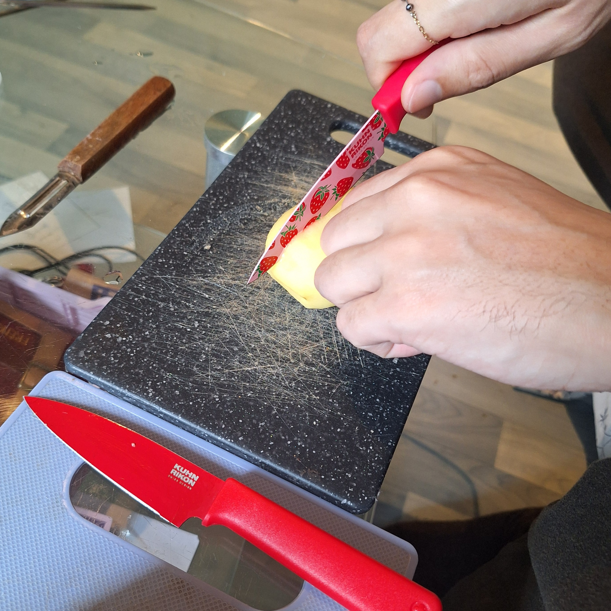

Quels outils choisir?
Un couteau permet de couper. Aucun couteau n'est contre indiqué pour le
découpage de la tomate, cependant le couteau à beurre coupera mieux le
beurre que la tomate. Je vous conseille des couteaux que vous trouvez
jolis, surtout si vous les trouvez en promotion.
Les outils de Charlotte

J'utilise généralement mon couteau rouge à motifs fraise pour couper mes
tomates. S'il est sale, j'utilise le même mais juste rouge. Il est d'un
rouge un peu plus orangé.Si les deux sont sales, je lave au moins un des
deux. On pourrait croire que Bambz coupe une patate sur la photo, mais
c'est une tomate jaune!